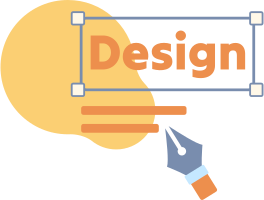

ABOUT
私について


日本語
JLPT N1
中国語
ネイティブ
楊 碧環
PIHUAN YANG
2000年台湾生まれ。広告会社でグラフィックデザイナーとして働いた後、ワーキングホリデーで来日し、旅行会社でWebやグラフィックのデザインを中心に、旅行手配や受付も経験しました。
前職で身につけた計画力やコミュニケーション力、実務的なデザインスキルを活かして、使いやすくて、ちょっと楽しいデザインを届けたいと思っています！
SKILLS
できること

-

デサイン
グラフィックデザイナーとして1年以上の経験があります。Webサイト、チラシ、バナー、SNS投稿用の画像、ロゴ、名刺などを制作してきました。
IllustratorPhotoshop
Figma
Canva
Adobe XD
-
ウェブ制作
コーディングやノーコードツールを使って、Webサイトのデザインコンセプトを思い通りに実装することができます。
HTML
CSS
Java Script
WIX
Word Press
-
イラスト
子どもの頃から絵を描くことが好きで、スケッチや水彩画、パソコンソフトを使って、さまざまなイラストを描いてきました。自身のデザイン作品にも、自作のイラストを取り入れています。
Clip Studio Paint
Illustrator
BIOGRAPH
今までのこと
-
2000.07～
子供の頃
絵を描くことが好き
絵を描くことが好きで、絵画教室に通い、スケッチや水彩などを学びました。
また、アニメや日本の音楽にも興味があり、中学生の頃から日本語を独学で学び始めました。
-
2015.8~2018.6
高校時期
デザインを始めて学ぶ
高校時代にインテリアデザインを専攻し、デザインの基礎知識やIllustator、Photoshop、Auto CADなとソフトの操作を学びました。
-
2018.8~2022.5
大学時代
色んな事を試した
大学ではビジュアルコミュニケーションデザインを専攻し、ポスターやアニメーション、Webデザイン、ゲーム制作など、さまざまな表現に取り組みました。
また、日本語能力試験 JLPT N2 に合格しました。
-
2022.7~2023.7
社会人in台湾
広告会社でSNS向けのデザインを担当
広告会社では、SNS向けのグラフィックデザインを担当するほか、クライアントにWebサイトのバックエンド操作も指導しました。この経験を通じて、よりWebデザインに特化した仕事がしたいと考えるようになりました。
同時に、ワーキングホリデーの準備として、日本語の表現力を高めるためオンラインでレッスンを受けました。
-
2023.8~2024~6
ワーホリin日本
レストランの接客と旅行巡り
来日当初はレストランで接客を担当し、日本語を使ってさまざまな国の人々と交流しました。
休日には各地を巡り、博物館や美術館で展示を見学しながら感性を磨きました。
-
2024.7~
日本で就職
旅行会社でデザイン業務を担当
Wixを使って、Webサイトを0から制作。旅行手配やスキー教室の受付業務にも携わり、日本語・中国語・英語を活かした接客対応をしました。
同時に、デザインスクールに通い、Figmaやコーディングを学習。
日本語能力試験 JLPT N1 にも合格しました。
INTEREST
好きなこと
-
絵を描くこと
みんなが楽しそうな絵を描くのが好き！
-
動物
動物と一緒にいると眠くなるzZ
-
動画を見る
YouTubeやアニメをよく見ています！
-
ゲーム
ストーリー重視のゲームが好きです！
-
音楽を聴く、歌うこと
一緒にカラオケ行こう！